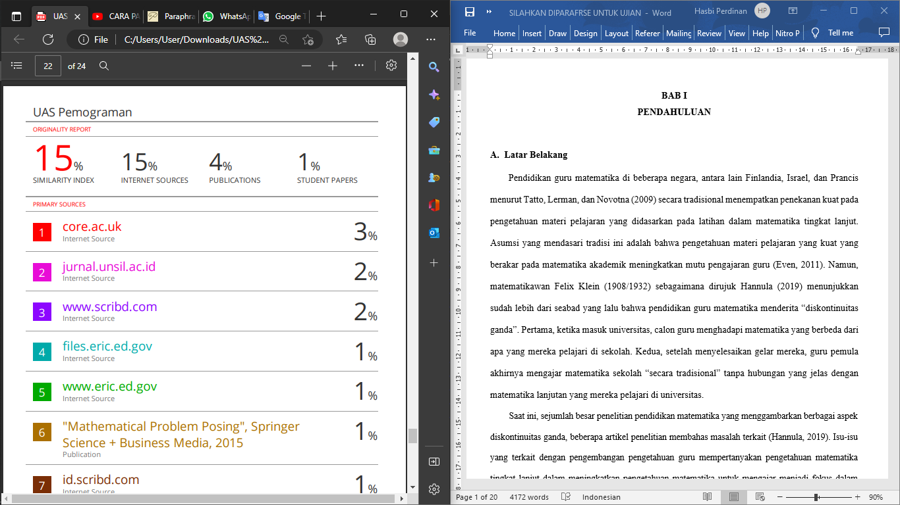
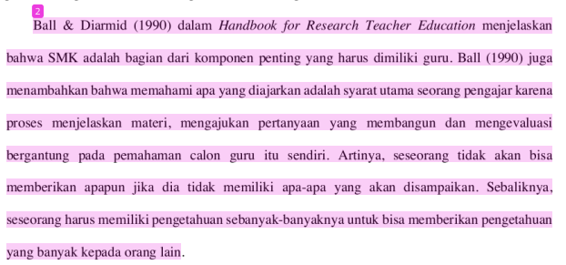
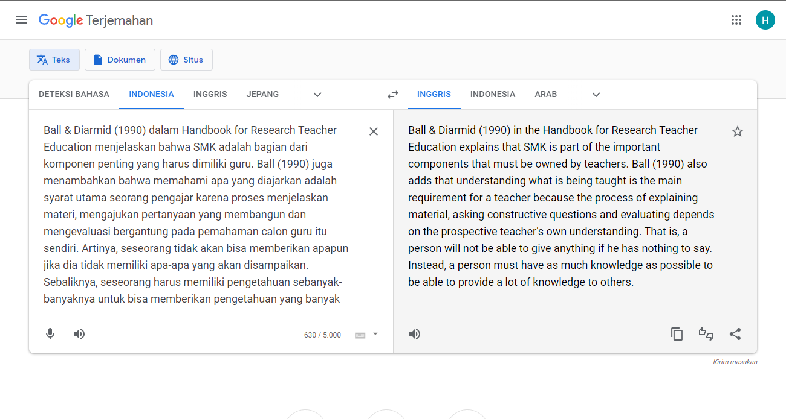
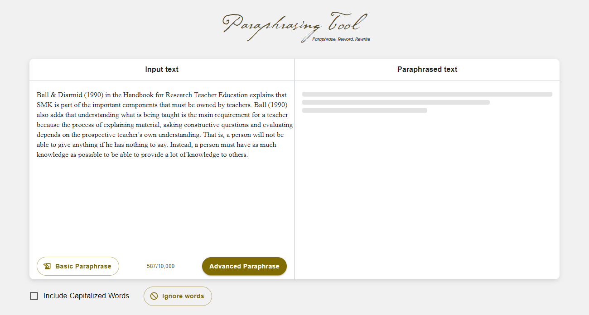
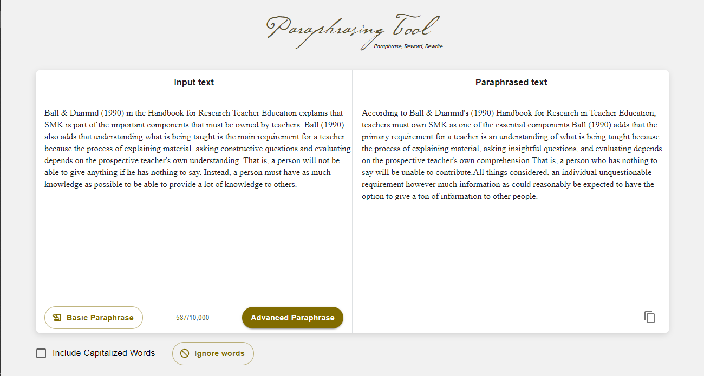
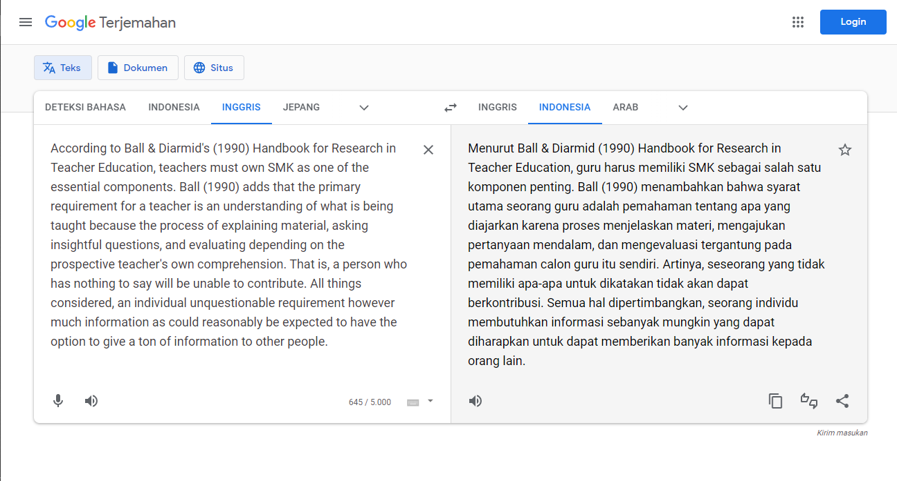
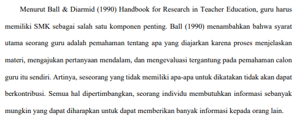

Berikut langkah-langkahnya:
1. Pertama, Siapkan file yang ingin di parafrase dan hasil similarity index Turnitin yang belum di paraphrase.

2. Kedua, periksa paragraf yang paling banyak terdeteksi plagiasinya. Setelah itu copy (Ctrl + C) paragraf yang terdeteksi plagiasinya.

3. Ketiga, masuk google translate dan paste (Ctrl + V) paragraf yang telah di copy agar kita dapat mentranslatekannya ke bahasa inggris. Setelah itu copy hasil translate.

4. Keempat, masuk website https://paraphrasing-tool.com dan paste (Ctrl+V) paragraf yang telah di copy di google translate. Setelah itu klik “Basic Paraphrase” untuk memparafrase paragraph yang telah di paste.

5. Kelima, ketika selesai memparafrase, klik icon copy yang sudah saya tanda seperti gambar dibawah ini.

6. Keenam, paste untuk translatekan lagi hasil parafrase di google translate agar hasil parafrase nya kembali berbahasa Indonesia. Setelah itu copy hasil parafrase yang sudah berbahasa Indonesia.

7. Ketujuh, paste paragraf yang telah berbahasa Indonesia ke file yang ingin di parafrase.

8. Cek kembali ke Turnitin hasil file yang telah di parafrase. Maka Similarity Index nya akan berkurang